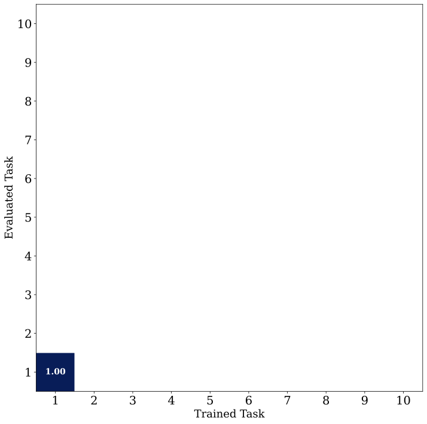
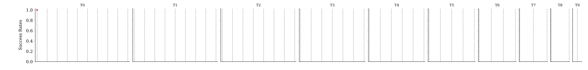

01 · About
About
When learning a new task on a robot, it is common to rehearse past experiences to prevent catastrophic forgetting of past skills. This approach works very well across architectures, task sets, and on real robots too. But why does it work so well? Our work shows that a small set of these experiences contributes greatly in anchoring past performance. Without even a small fraction of them, catastrophic forgetting increases significantly. We call these experiences, Memory Anchors.
Our simple insight: new tasks interact with tasks the robot already knows. If a new task shares similar states as old ones but requires different actions, the policy struggles to bridge the gap. For example, learning how to manipulate a familiar object in a new way. The policy is most sensitive to the past task data sampled from this region.
We present a simple way of querying a policy to extract Memory Anchors by using the policy's own latent structure and action predictions. Removing access to 10% of these Memory Anchors in the replay buffer leads to more than a 4.5x increase in catastrophic forgetting on the LIBERO benchmark suites. Under a limited memory budget, enriching the replay buffer with Memory Anchors can decrease worst-case forgetting in LIBERO by 63% and allow a real robot to learn a series of highly-conflicting tasks.
02 · Continual Learning Challenge
Continual Learning Challenge
Sequential Task Learning
We explore the problem setting of imitation learning on tasks in sequence. Drag the slider to step through ten tasks. Observe how the policy learns new tasks (horizontal) and remembers old ones (vertical).

Visual inspired by Huihan Liu
Rehearsing Past Tasks:Training a new task is nearly guarenteed to destroy past task knowledge without some regularization. In our work, we study a common regularization approach called Experience Replay (ER). The idea is simple: keep a buffer of past experiences and replay them during training.
Measuring Retention: We measure a policy's past task retention through Negative Backward Transfer (NBT), shown as the shaded area below. Click through different ER buffer sizes to see how they affect this score.
Negative Backward Transfer (NBT) Score: 0.42

Experience Replay
Placeholder for what makes rehearsal-based continual learning difficult.
03 · Finding Memory Anchors
Finding Memory Anchors
A simple card grid for linking out to whatever you're building.
Approach
Placeholder for how memory anchors are identified.
Results
Placeholder for the results of the anchor-finding method.
04 · Impact of Memory Anchors
Impact of Memory Anchors
A simple card grid for linking out to whatever you're building.
Downstream effects
Placeholder for how memory anchors affect downstream task performance.
Takeaways
Placeholder for the high-level takeaways.
06 · BibTeX
BibTeX
@article{placeholder2026,
title = {Placeholder Title Goes Here},
author = {Last, First and Last, First},
journal = {arXiv preprint arXiv:0000.00000},
year = {2026}
}